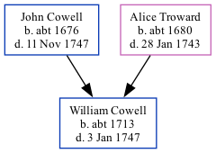

William Cowell c1713 - 1747
[ Home ] | [ Calendar ] | [ Surnames Index ] | [ Family History ]The child of John Cowell (a yeoman) and Alice Troward, William Cowell, the six times great-uncle of Nigel Horne, was born in Margate, Kent, England c. 1713 and baptized there at St John the Baptist Church on May 23, 1713.
He died on Jan 3, 1747 in Margate1 and was buried there at St John the Baptist Church c. 17472.
Parents
- John was born c. 1676
- Alice was born c. 1680
Citations
- Other
- Find A Grave http://www.findagrave.com
Media
John Cowell - Alice Troward - headstone

Canterbury Baptisms Image - GBPRS-CANT-005264866-00345
England, Births & Baptisms 1538-1975 Transcription - R_885511436
England, Births & Baptisms 1538-1975 Transcription - R_885859790
Canterbury Baptisms Image - GBPRS-CANT-005264880-00497
Family Tree
Generated by Ged2Site. Last updated on Jul 20, 2025